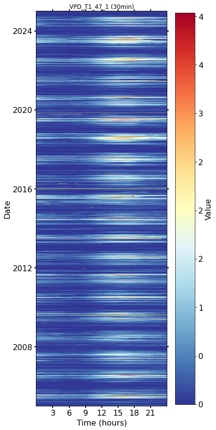
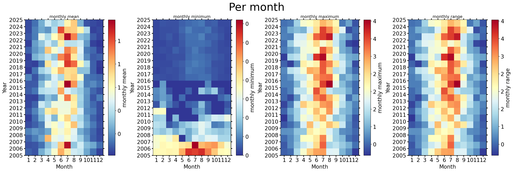
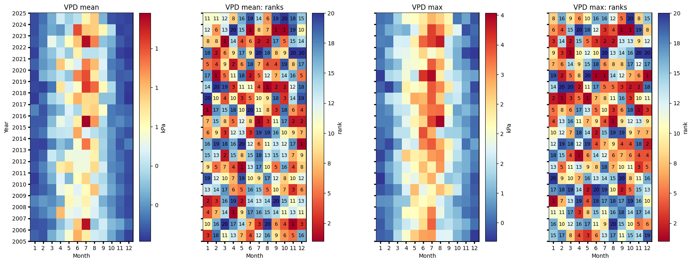
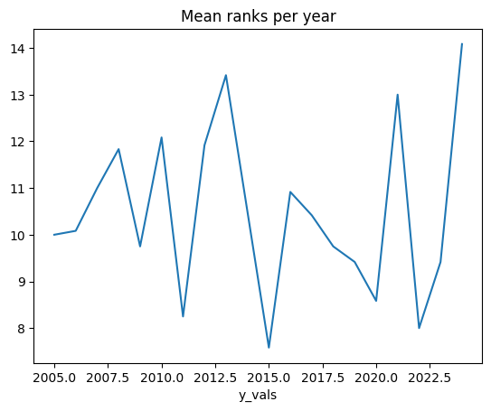
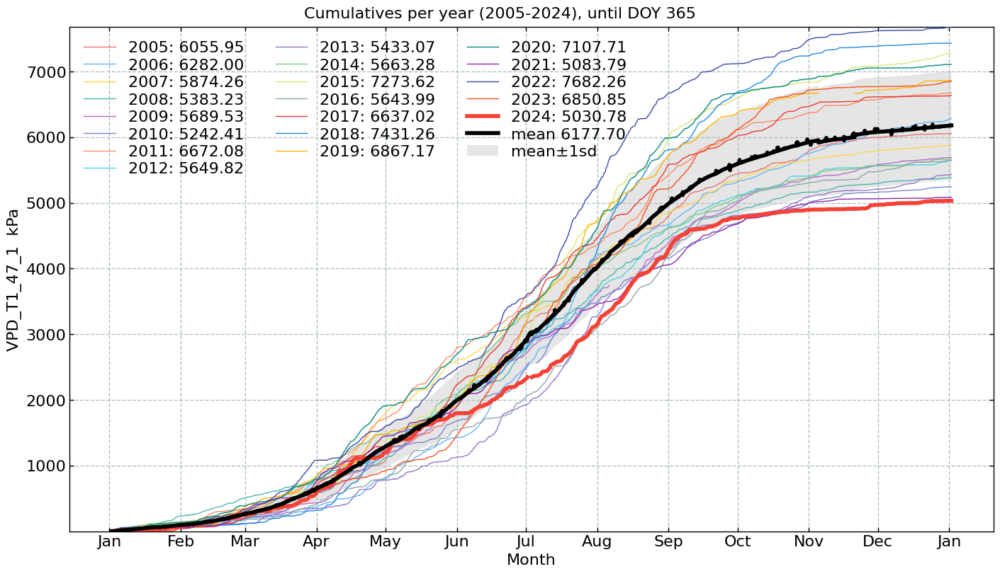
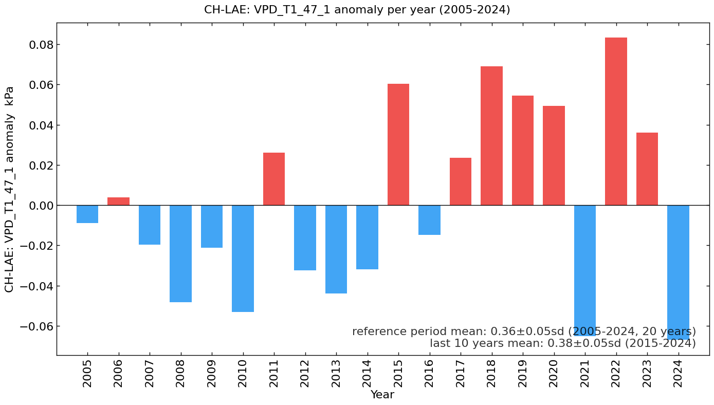

Meteo: Air temperature (VPD) (2005-2024)#
Author: Lukas Hörtnagl (holukas@ethz.ch)
Variable#
varname = 'VPD_T1_47_1'
var = "VPD" # Name shown in plots
units = "kPa"
Imports#
import importlib.metadata
import warnings
from datetime import datetime
from pathlib import Path
import pandas as pd
import matplotlib.pyplot as plt
import matplotlib.gridspec as gridspec
import diive as dv
from diive.core.io.files import save_parquet, load_parquet
from diive.core.plotting.cumulative import CumulativeYear
from diive.core.plotting.bar import LongtermAnomaliesYear
warnings.filterwarnings(action='ignore', category=FutureWarning)
warnings.filterwarnings(action='ignore', category=UserWarning)
version_diive = importlib.metadata.version("diive")
print(f"diive version: v{version_diive}")
diive version: v0.87.1
Load data#
SOURCEDIR = r"../10_METEO"
FILENAME = r"12.5_METEO7_GAPFILLED_2004-2024.parquet"
FILEPATH = Path(SOURCEDIR) / FILENAME
df = load_parquet(filepath=FILEPATH)
keeplocs = (df.index.year >= 2005) & (df.index.year <= 2024)
df = df[keeplocs].copy()
df
Loaded .parquet file ..\10_METEO\12.5_METEO7_GAPFILLED_2004-2024.parquet (0.049 seconds).
--> Detected time resolution of <30 * Minutes> / 30min
| LW_IN_T1_47_1 | PA_T1_47_1 | PPFD_IN_T1_47_1 | RH_T1_47_1 | SW_IN_T1_47_1 | TA_T1_47_1 | SW_IN_T1_47_1_gfXG | TA_T1_47_1_gfXG | PPFD_IN_T1_47_1_gfXG | VPD_T1_47_1 | VPD_T1_47_1_gfXG | FLAG_VPD_T1_47_1_gfXG_ISFILLED | |
|---|---|---|---|---|---|---|---|---|---|---|---|---|
| TIMESTAMP_MIDDLE | ||||||||||||
| 2005-01-01 00:15:00 | NaN | NaN | 0.0 | 96.203705 | 0.0 | -2.160000 | 0.0 | -2.160000 | 0.0 | 0.019778 | 0.019778 | 0 |
| 2005-01-01 00:45:00 | NaN | NaN | 0.0 | 98.003701 | 0.0 | -2.010000 | 0.0 | -2.010000 | 0.0 | 0.010517 | 0.010517 | 0 |
| 2005-01-01 01:15:00 | NaN | NaN | 0.0 | 98.203705 | 0.0 | -1.791000 | 0.0 | -1.791000 | 0.0 | 0.009618 | 0.009618 | 0 |
| 2005-01-01 01:45:00 | NaN | NaN | 0.0 | 98.203705 | 0.0 | -1.539000 | 0.0 | -1.539000 | 0.0 | 0.009799 | 0.009799 | 0 |
| 2005-01-01 02:15:00 | NaN | NaN | 0.0 | 98.203705 | 0.0 | -1.338000 | 0.0 | -1.338000 | 0.0 | 0.009946 | 0.009946 | 0 |
| ... | ... | ... | ... | ... | ... | ... | ... | ... | ... | ... | ... | ... |
| 2024-12-31 21:45:00 | 232.595527 | 94.211806 | 0.0 | 87.254008 | 0.0 | -0.504794 | 0.0 | -0.504794 | 0.0 | 0.075030 | 0.075030 | 0 |
| 2024-12-31 22:15:00 | 232.609777 | 94.189013 | 0.0 | 87.430236 | 0.0 | -0.296828 | 0.0 | -0.296828 | 0.0 | 0.075127 | 0.075127 | 0 |
| 2024-12-31 22:45:00 | 232.345020 | 94.169525 | 0.0 | 89.787920 | 0.0 | -0.392922 | 0.0 | -0.392922 | 0.0 | 0.060608 | 0.060608 | 0 |
| 2024-12-31 23:15:00 | 234.211100 | 94.168413 | 0.0 | 81.809355 | 0.0 | 0.792661 | 0.0 | 0.792661 | 0.0 | 0.117695 | 0.117695 | 0 |
| 2024-12-31 23:45:00 | 231.760533 | 94.170793 | 0.0 | 88.311314 | 0.0 | -0.422600 | 0.0 | -0.422600 | 0.0 | 0.069221 | 0.069221 | 0 |
350640 rows × 12 columns
series = df[varname].copy()
series.plot(x_compat=True);
series
TIMESTAMP_MIDDLE
2005-01-01 00:15:00 0.019778
2005-01-01 00:45:00 0.010517
2005-01-01 01:15:00 0.009618
2005-01-01 01:45:00 0.009799
2005-01-01 02:15:00 0.009946
...
2024-12-31 21:45:00 0.075030
2024-12-31 22:15:00 0.075127
2024-12-31 22:45:00 0.060608
2024-12-31 23:15:00 0.117695
2024-12-31 23:45:00 0.069221
Freq: 30min, Name: VPD_T1_47_1, Length: 350640, dtype: float64
xlabel = f"{var} ({units})"
xlim = [series.min(), series.max()]
Stats#
Overall mean#
_yearly_avg = series.resample('YE').mean()
_overall_mean = _yearly_avg.mean()
_overall_sd = _yearly_avg.std()
print(f"Overall mean: {_overall_mean} +/- {_overall_sd}")
Overall mean: 0.3552420731579419 +/- 0.04715788745007997
Yearly means#
ym = series.resample('YE').mean()
ym
TIMESTAMP_MIDDLE
2005-12-31 0.346331
2006-12-31 0.359115
2007-12-31 0.335538
2008-12-31 0.306914
2009-12-31 0.334010
2010-12-31 0.302139
2011-12-31 0.381283
2012-12-31 0.322967
2013-12-31 0.311386
2014-12-31 0.323487
2015-12-31 0.415564
2016-12-31 0.340576
2017-12-31 0.378826
2018-12-31 0.424159
2019-12-31 0.409711
2020-12-31 0.404670
2021-12-31 0.290171
2022-12-31 0.438485
2023-12-31 0.391231
2024-12-31 0.288277
Freq: YE-DEC, Name: VPD_T1_47_1, dtype: float64
ym.sort_values(ascending=False)
TIMESTAMP_MIDDLE
2022-12-31 0.438485
2018-12-31 0.424159
2015-12-31 0.415564
2019-12-31 0.409711
2020-12-31 0.404670
2023-12-31 0.391231
2011-12-31 0.381283
2017-12-31 0.378826
2006-12-31 0.359115
2005-12-31 0.346331
2016-12-31 0.340576
2007-12-31 0.335538
2009-12-31 0.334010
2014-12-31 0.323487
2012-12-31 0.322967
2013-12-31 0.311386
2008-12-31 0.306914
2010-12-31 0.302139
2021-12-31 0.290171
2024-12-31 0.288277
Name: VPD_T1_47_1, dtype: float64
Monthly averages#
seriesdf = pd.DataFrame(series)
seriesdf['MONTH'] = seriesdf.index.month
seriesdf['YEAR'] = seriesdf.index.year
monthly_avg = seriesdf.groupby(['YEAR', 'MONTH'])[varname].mean().unstack()
monthly_avg
| MONTH | 1 | 2 | 3 | 4 | 5 | 6 | 7 | 8 | 9 | 10 | 11 | 12 |
|---|---|---|---|---|---|---|---|---|---|---|---|---|
| YEAR | ||||||||||||
| 2005 | 0.098728 | 0.071203 | 0.255526 | 0.368644 | 0.566865 | 0.826770 | 0.667390 | 0.451273 | 0.419682 | 0.241639 | 0.130418 | 0.038538 |
| 2006 | 0.065026 | 0.077202 | 0.125051 | 0.296425 | 0.418049 | 0.762348 | 1.136930 | 0.319461 | 0.448141 | 0.285055 | 0.238983 | 0.119354 |
| 2007 | 0.097568 | 0.151464 | 0.228125 | 0.798676 | 0.527100 | 0.484729 | 0.570716 | 0.469590 | 0.342726 | 0.202463 | 0.094519 | 0.053188 |
| 2008 | 0.156523 | 0.209550 | 0.180537 | 0.242362 | 0.625697 | 0.534153 | 0.644119 | 0.493965 | 0.257575 | 0.174711 | 0.103464 | 0.050405 |
| 2009 | 0.055331 | 0.095297 | 0.154754 | 0.515293 | 0.578902 | 0.487260 | 0.604620 | 0.783934 | 0.410350 | 0.234502 | 0.146221 | 0.067759 |
| 2010 | 0.031270 | 0.115490 | 0.262697 | 0.478771 | 0.275770 | 0.596658 | 0.734554 | 0.434073 | 0.368292 | 0.210315 | 0.104567 | 0.051532 |
| 2011 | 0.074444 | 0.160941 | 0.304421 | 0.665664 | 0.720928 | 0.539708 | 0.542076 | 0.721999 | 0.456061 | 0.173393 | 0.143382 | 0.060903 |
| 2012 | 0.047402 | 0.096555 | 0.436990 | 0.345349 | 0.541762 | 0.526567 | 0.529450 | 0.644753 | 0.338462 | 0.188343 | 0.112636 | 0.060602 |
| 2013 | 0.044530 | 0.040868 | 0.151234 | 0.300698 | 0.236430 | 0.563825 | 0.927837 | 0.680899 | 0.355528 | 0.195319 | 0.076643 | 0.150297 |
| 2014 | 0.089826 | 0.133849 | 0.381018 | 0.414037 | 0.427751 | 0.841078 | 0.476376 | 0.396185 | 0.335520 | 0.206614 | 0.106579 | 0.067637 |
| 2015 | 0.080089 | 0.086698 | 0.288041 | 0.517502 | 0.444502 | 0.654488 | 1.181111 | 0.875660 | 0.382253 | 0.147485 | 0.176234 | 0.124083 |
| 2016 | 0.163168 | 0.073469 | 0.194694 | 0.271803 | 0.471009 | 0.361981 | 0.714703 | 0.749679 | 0.579225 | 0.145200 | 0.120538 | 0.104775 |
| 2017 | 0.027242 | 0.131541 | 0.346825 | 0.418633 | 0.621429 | 0.818097 | 0.717419 | 0.727567 | 0.305520 | 0.304060 | 0.092604 | 0.014897 |
| 2018 | 0.048989 | 0.033899 | 0.134523 | 0.690992 | 0.466109 | 0.575210 | 1.045025 | 0.955584 | 0.618676 | 0.370566 | 0.094623 | 0.027068 |
| 2019 | 0.035984 | 0.260537 | 0.324951 | 0.416678 | 0.317199 | 0.903075 | 1.006291 | 0.675062 | 0.442672 | 0.177969 | 0.083475 | 0.098477 |
| 2020 | 0.093285 | 0.197273 | 0.266215 | 0.770265 | 0.566880 | 0.471992 | 0.916620 | 0.799875 | 0.474777 | 0.145026 | 0.108674 | 0.038461 |
| 2021 | 0.034762 | 0.217407 | 0.314375 | 0.445382 | 0.327642 | 0.648965 | 0.400432 | 0.399979 | 0.438516 | 0.208789 | 0.037754 | 0.014229 |
| 2022 | 0.075574 | 0.150512 | 0.514989 | 0.368359 | 0.598409 | 0.775528 | 1.144731 | 0.910807 | 0.308749 | 0.252991 | 0.084683 | 0.041637 |
| 2023 | 0.056557 | 0.152780 | 0.241544 | 0.200306 | 0.383447 | 1.009227 | 0.773765 | 0.756753 | 0.634094 | 0.384954 | 0.038167 | 0.053353 |
| 2024 | 0.059489 | 0.127057 | 0.251946 | 0.449865 | 0.342013 | 0.398504 | 0.634605 | 0.760310 | 0.267576 | 0.072583 | 0.053014 | 0.041320 |
Number of days below …#
# plotdf = df[[varname]].copy()
# plotdf = plotdf.resample('D').min()
# belowzero = plotdf.loc[plotdf[varname] < 0].copy()
# belowzero = belowzero.groupby(belowzero.index.year).count()
# belowzero["YEAR"] = belowzero.index
# belowzero
# belowzero.plot.bar(x="YEAR", y=varname, title=f"Number of days with {varname} < 0°");
# display(belowzero)
# print(f"Average per year: {belowzero[varname].mean()} +/- {belowzero[varname].std():.2f} SD")
Number of days above …#
plotdf = df[[varname]].copy()
plotdf = plotdf.resample('D').max()
above = plotdf.loc[plotdf[varname] > 2].copy()
above = above.groupby(above.index.year).count()
above["YEAR"] = above.index
above.plot.bar(x="YEAR", y=varname, title=f"Number of days with {varname} > 2 {units}");
display(above)
print(f"Average per year: {above[varname].mean()} +/- {above[varname].std():.2f} SD")
| VPD_T1_47_1 | YEAR | |
|---|---|---|
| TIMESTAMP_MIDDLE | ||
| 2005 | 23 | 2005 |
| 2006 | 21 | 2006 |
| 2007 | 9 | 2007 |
| 2008 | 7 | 2008 |
| 2009 | 13 | 2009 |
| 2010 | 11 | 2010 |
| 2011 | 13 | 2011 |
| 2012 | 11 | 2012 |
| 2013 | 15 | 2013 |
| 2014 | 10 | 2014 |
| 2015 | 30 | 2015 |
| 2016 | 16 | 2016 |
| 2017 | 30 | 2017 |
| 2018 | 38 | 2018 |
| 2019 | 29 | 2019 |
| 2020 | 16 | 2020 |
| 2021 | 7 | 2021 |
| 2022 | 38 | 2022 |
| 2023 | 27 | 2023 |
| 2024 | 15 | 2024 |
Average per year: 18.95 +/- 9.91 SD
Heatmap plots#
Half-hourly#
fig, axs = plt.subplots(ncols=1, figsize=(6, 12), dpi=72, layout="constrained")
dv.heatmapdatetime(series=series, ax=axs, cb_digits_after_comma=0).plot()

Monthly#
fig, axs = plt.subplots(ncols=4, figsize=(21, 7), dpi=120, layout="constrained")
fig.suptitle(f'Per month', fontsize=32)
dv.heatmapyearmonth(series_monthly=series.resample('M').mean(), title="monthly mean", ax=axs[0], cb_digits_after_comma=0, zlabel="monthly mean").plot()
dv.heatmapyearmonth(series_monthly=series.resample('M').min(), title="monthly minimum", ax=axs[1], cb_digits_after_comma=0, zlabel="monthly minimum").plot()
dv.heatmapyearmonth(series_monthly=series.resample('M').max(), title="monthly maximum", ax=axs[2], cb_digits_after_comma=0, zlabel="monthly maximum").plot()
_range = series.resample('M').max().sub(series.resample('M').min())
dv.heatmapyearmonth(series_monthly=_range, title="monthly range", ax=axs[3], cb_digits_after_comma=0, zlabel="monthly range").plot()

Monthly ranks#
# Figure
fig = plt.figure(facecolor='white', figsize=(17, 6))
# Gridspec for layout
gs = gridspec.GridSpec(1, 4) # rows, cols
gs.update(wspace=0.35, hspace=0.3, left=0.03, right=0.97, top=0.97, bottom=0.03)
ax_mean = fig.add_subplot(gs[0, 0])
ax_mean_ranks = fig.add_subplot(gs[0, 1])
ax_max = fig.add_subplot(gs[0, 2])
ax_max_ranks = fig.add_subplot(gs[0, 3])
params = {'axlabels_fontsize': 10, 'ticks_labelsize': 10, 'cb_labelsize': 10}
dv.heatmapyearmonth_ranks(ax=ax_mean, series=series, agg='mean', ranks=False, zlabel=units, cmap="RdYlBu_r", show_values=False, **params).plot()
hm_mean_ranks = dv.heatmapyearmonth_ranks(ax=ax_mean_ranks, series=series, agg='mean', show_values=True, **params)
hm_mean_ranks.plot()
dv.heatmapyearmonth_ranks(ax=ax_max, series=series, agg='max', ranks=False, zlabel=units, cmap="RdYlBu_r", show_values=False, **params).plot()
dv.heatmapyearmonth_ranks(ax=ax_max_ranks, series=series, agg='max', show_values=True, **params).plot()
ax_mean.set_title(f"{var} mean", color='black')
ax_mean_ranks.set_title(f"{var} mean: ranks", color='black')
ax_max.set_title(f"{var} max", color='black')
ax_max_ranks.set_title(f"{var} max: ranks", color='black')
ax_mean.tick_params(left=True, right=False, top=False, bottom=True,
labelleft=True, labelright=False, labeltop=False, labelbottom=True)
ax_mean_ranks.tick_params(left=True, right=False, top=False, bottom=True,
labelleft=False, labelright=False, labeltop=False, labelbottom=True)
ax_max.tick_params(left=True, right=False, top=False, bottom=True,
labelleft=False, labelright=False, labeltop=False, labelbottom=True)
ax_max_ranks.tick_params(left=True, right=False, top=False, bottom=True,
labelleft=False, labelright=False, labeltop=False, labelbottom=True)
ax_mean_ranks.set_ylabel("")
ax_max.set_ylabel("")
ax_max_ranks.set_ylabel("")
fig.show()

Mean ranks per year#
hm_mean_ranks.hm.get_plot_data().mean(axis=1).plot(title="Mean ranks per year");

Ridgeline plots#
Yearly#
# rp = dv.ridgeline(series=series)
# rp.plot(
# how='yearly',
# kd_kwargs=None, # params from scikit KernelDensity as dict
# xlim=xlim, # min/max as list
# ylim=[0, 0.50], # min/max as list
# hspace=-0.8, # overlap between months
# xlabel=f"{var} ({units})",
# fig_width=5,
# fig_height=9,
# shade_percentile=0.5,
# show_mean_line=False,
# fig_title=f"{var} per year (2005-2024)",
# fig_dpi=72,
# showplot=True,
# ascending=False
# )
Monthly#
# rp.plot(
# how='monthly',
# kd_kwargs=None, # params from scikit KernelDensity as dict
# xlim=xlim, # min/max as list
# ylim=[0, 0.14], # min/max as list
# hspace=-0.6, # overlap between months
# xlabel=f"{var} ({units})",
# fig_width=4.5,
# fig_height=8,
# shade_percentile=0.5,
# show_mean_line=False,
# fig_title=f"{var} per month (2005-2024)",
# fig_dpi=72,
# showplot=True,
# ascending=False
# )
Weekly#
# rp.plot(
# how='weekly',
# kd_kwargs=None, # params from scikit KernelDensity as dict
# xlim=xlim, # min/max as list
# ylim=[0, 0.15], # min/max as list
# hspace=-0.6, # overlap
# xlabel=f"{var} ({units})",
# fig_width=6,
# fig_height=16,
# shade_percentile=0.5,
# show_mean_line=False,
# fig_title=f"{var} per week (2005-2024)",
# fig_dpi=72,
# showplot=True,
# ascending=False
# )
Single years per month#
# uniq_years = series.index.year.unique()
# for uy in uniq_years:
# series_yr = series.loc[series.index.year == uy].copy()
# rp = dv.ridgeline(series=series_yr)
# rp.plot(
# how='monthly',
# kd_kwargs=None, # params from scikit KernelDensity as dict
# xlim=xlim, # min/max as list
# ylim=[0, 0.18], # min/max as list
# hspace=-0.6, # overlap
# xlabel=f"{var} ({units})",
# fig_width=6,
# fig_height=7,
# shade_percentile=0.5,
# show_mean_line=False,
# fig_title=f"{var} per month ({uy})",
# fig_dpi=72,
# showplot=True,
# ascending=False
# )
Single years per week#
# uniq_years = series.index.year.unique()
# for uy in uniq_years:
# series_yr = series.loc[series.index.year == uy].copy()
# rp = dv.ridgeline(series=series_yr)
# rp.plot(
# how='weekly',
# kd_kwargs=None, # params from scikit KernelDensity as dict
# xlim=xlim, # min/max as list
# ylim=[0, 0.3], # min/max as list
# hspace=-0.8, # overlap
# xlabel=f"{var} ({units})",
# fig_width=9,
# fig_height=18,
# shade_percentile=0.5,
# show_mean_line=False,
# fig_title=f"{var} per week ({uy})",
# fig_dpi=72,
# showplot=True,
# ascending=False
# )
Cumulative plot#
CumulativeYear(
series=series,
series_units=units,
start_year=2005,
end_year=2024,
show_reference=True,
excl_years_from_reference=None,
highlight_year=2024,
highlight_year_color='#F44336').plot();

Long-term anomalies#
series_yearly_mean = series.resample('YE').mean()
series_yearly_mean.index = series_yearly_mean.index.year
series_label = f"CH-LAE: {varname}"
LongtermAnomaliesYear(series=series_yearly_mean,
series_label=series_label,
series_units=units,
reference_start_year=2005,
reference_end_year=2024).plot()

End of notebook#
dt_string = datetime.now().strftime("%Y-%m-%d %H:%M:%S")
print(f"Finished. {dt_string}")
Finished. 2025-06-12 00:54:40